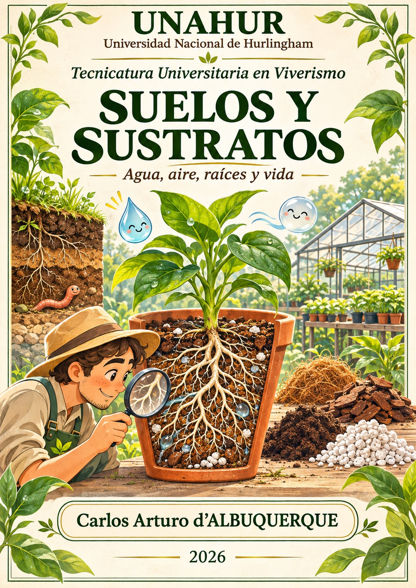

Agua, aire y sólidos
Ingresá fracciones del volumen total. Ejemplo del informe: 40 % aire y 50 % agua.
Ejercicio de balance de volumen; no predice disponibilidad de agua ni un óptimo de cultivo.TECNICATURA UNIVERSITARIA EN VIVERISMO
CUADERNO DE ESTUDIO · 2026
Agua, aire, raíces y vida.
Propiedades, mezclas y manejo: estudiar desde la raíz.

EL RECORRIDO
Índice construido siguiendo el orden de las archivos 019 a 029.
No encontramos temas con esa palabra.
MEDIR · RELACIONAR · INTERPRETAR
Ingresá fracciones del volumen total. Ejemplo del informe: 40 % aire y 50 % agua.
Ejercicio de balance de volumen; no predice disponibilidad de agua ni un óptimo de cultivo.Usá la misma muestra y el mismo volumen total para calcular.
Humedad gravimétrica expresada sobre masa seca. Valores iniciales ilustrativos.Datos de la lámina 026. El método de extracción no está informado; no son valores universales.
| Material | pH | CE (dS/m) |
|---|
Selección de parámetros de la lámina 027. Solicitar método y condiciones del ensayo antes de comparar.
| Parámetro | Unidad | Mezcla | Turba | Compost |
|---|
HACÉ UNA PAUSA, RECORDÁ UNA IDEA
PONÉ A PRUEBA LO APRENDIDO
Dieciséis preguntas, con explicación después de cada respuesta.
Una lámina por página al imprimir. Elegí tamaño A4 y orientación vertical.